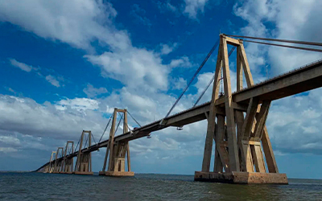

Daniel Cosme
Web Development
Welcome to my course landing page! I am excited to explore dynamic web development, layout design with CSS Grid and Flexbox, and interactive programming with JavaScript.
Zulia, Venezuela

I live in San Francisco, Zulia, Venezuela. Zulia is well known for its rich culture, vibrant history, and unique landmarks like the General Rafael Urdaneta Bridge over Lake Maracaibo.